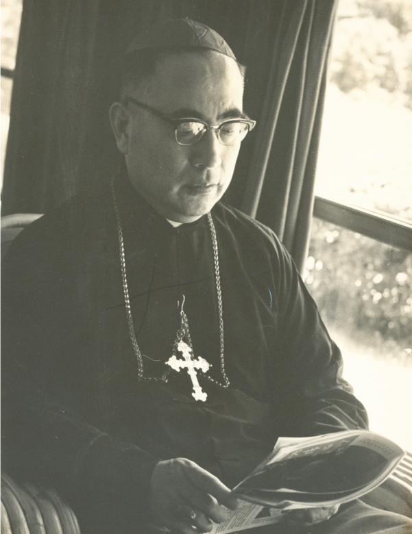

緣起
輔仁大學校史室多年來進行于斌校長檔案資料的數位化及編目作業，為使數位化成果能被廣泛的研究應用，特將本室所藏于斌樞機剪報資料進行規劃並建置一個數位檢索系統，提供一個平台，讓社會大眾藉由不同時期、不同地方的報紙刊物的文字照片記錄去認識于斌樞機，瞭解于斌樞機個人的生命歷程，並從不同的國家、語言、角度、方向，去挖掘、探討，藉此展現于斌樞機在宗教、政治外交、社會及教育文化上的重要性及影響力。
輔仁大學校史室多年來進行于斌校長檔案資料的數位化及編目作業，為使數位化成果能被廣泛的研究應用，特將本室所藏于斌樞機剪報資料進行規劃並建置一個數位檢索系統，提供一個平台，讓社會大眾藉由不同時期、不同地方的報紙刊物的文字照片記錄去認識于斌樞機，瞭解于斌樞機個人的生命歷程，並從不同的國家、語言、角度、方向，去挖掘、探討，藉此展現于斌樞機在宗教、政治外交、社會及教育文化上的重要性及影響力。